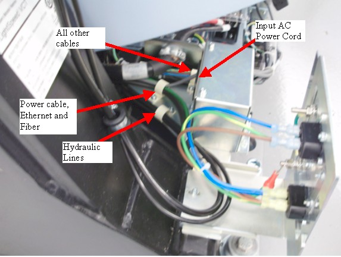
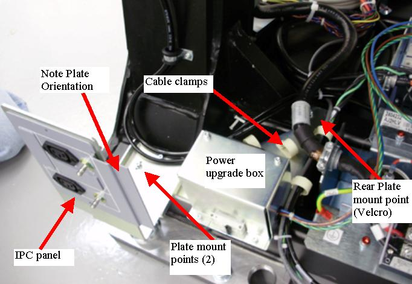
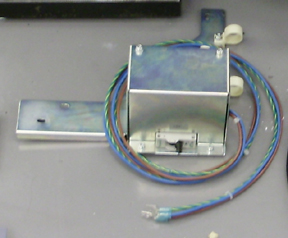
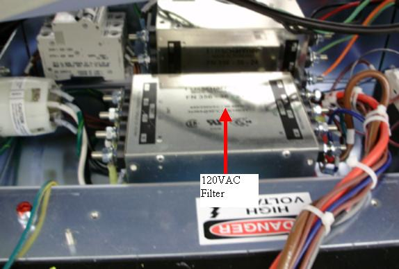

Operating Documentation
Direction 5193574-800, Rev# 22
LightSpeed 7.X Service Methods
Module Version 1.0, Version Date 4/21/09
Operating Documentation |
| Required Persons | Preliminary Reqs | Procedure | Finalization |
|---|---|---|---|
| 1 | Not Applicable | 90 mins | 15 mins |
This procedure defines the steps necessary to replace the AC power box that supplies power to the Options interface panels for systems that were upgraded to the new options panel configuration instead of delivered with the options components from manufacturing. Those systems that came installed by manufacturing also have an updated power pan such that the add on AC power box is not needed.
| Last Revised: | 10 February 2009 |
| Item | Qty | Effectivity | Part# | Manufacturer | |
|---|---|---|---|---|---|
| FE torque wrench kit | 1 | - | 46-268445G1 or 5135228 or equivalent | - | |
| FE Toolkit | 1 | - | - | - | |
| 3 mm hex wrench and driver bit | 1 | - | - | - | |
| Item | Qty | Effectivity | Part# | Manufacturer |
|---|---|---|---|---|
| Tie-wraps | - | - | - | |
| Hand Towels, for clean-up | - | - | - |
| Item | Qty | Effectivity | Part# | Manufacturer | |
|---|---|---|---|---|---|
| 120V Power Box | 1 | - | 5324299 | - | |
| ||||
| Follow ALL required safety and PPE procedures customary for your organization, when working on this product. | ||||
| Condition | Reference | Effectivity |
|---|---|---|
Only trained service personnel should service the GE CT Scanner. | - | - |
| ||||
| This procedure uses many screw, lock and flat washer combinations. Make sure the order of installation has the lock washer positioned between the flat washer and head of the screw. | ||||
Remove gantry right side cover and disable Axial drive, HVDC and 120VAC service switches from the Service Switch Panel.
Refer to Replacement → Gantry → Enclosure → (Cover Removal Procedures).
Remove all Gantry base covers. (The cover on the bottom of the tilting assembly can stay in place.)
Tilt the gantry all the way back for easier access to gantry base from the rear using the following steps.
Turn on the gantry 120VAC service switch and press the table drives enable at the lower right corner of the service switch panel.
Turn on service mode switch S4 (up position)
Turn on the tilt enable switch S9 (on position)
Use the tilt switch S10 to tilt the gantry all the way back to the tilt stop blocks. Check clearances on both sides when getting close to full back to make sure there are no obstructions that need to be cleared.
Turn off the gantry 120VAC service switch.
Shut down the console and perform LOTO for the gantry per safety procedures.
Unplug the AC power cord from the power upgrade box.
Illustration 1: Cable Routing

Loosen cable clamps and remove the hydraulic lines, power cables, Ethernet, and fiber cabling (3 mm hex wrench).
Place a mark on the IPC panel mount plate next to each of the two screws to use for reference when reinstalling the plate later.
Remove the IPC panel mount plate that is on top of the power assembly bracket (3 mm hex wrench).
Illustration 2: Plate Mounts

Remove the AC power box plate mount screw that is behind the cable clamps by the gantry power pan (3 mm hex wrench).
| NOTE: | A few gantry's did not have a threaded screw hole in the gantry base, so a piece of velcro may be there instead of a screw. Just pull off the plate if this is the case. |
Prepare to tilt the gantry forward by removing LOTO and restore power to gantry by the 120 VAC service switch.
Use the tilt switch S10 to tilt the gantry forward for easy access to front side of gantry power pan. Check clearances on both sides when tilting to make sure there are no obstructions that need to be cleared.
Turn off gantry 120 VAC service switch and reinstall LOTO to ensure no power to gantry.
| ||||
| Electrocution hazard | ||||
| Voltages present in gantry | ||||
| USE PROPER LOCKOUT/TAGOUT PROCEDURES from the safety section of the service documentation . this procedure includes work directly in the gantry power pan. |
From the front side of the gantry, remove the plastic cover from the top of the power pan by 2 - M4's (3 mm hex wrench).
Disconnect the Power Lines from Power Pan.
Illustration 3: Power Pan Connections

Table 1: Power line connections to 120 VAC filter
| Wire Color | Load Side | Line Side |
| Blue | N | |
| Brown | L1 | |
| Green (GND) | Gnd |
Cut cable ties as necessary for the AC power line from the power pan to the AC power box and remove the Power box from the gantry frame from the back of the gantry.
This section defines the connection between the power box and the power pan.
Set the new power box in place and run the AC power lines to the front for connection to the gantry power pan.
Illustration 4: AC Power Box

On the 120 VAC line filter, connect the lugs as shown in Table 2.
Connect the wire lugs under the washer and lock washer. Tighten the nuts making sure all preexisting lugs are still connected.
Illustration 5: Power Pan AC filter

Table 2: Power line connections to 120 VAC filter
| Wire Color | Load Side | Line Side |
| Blue | N | |
| Brown | L1 | |
| Green (GND) | Gnd |
Illustration 6: Power line connections
Reinstall the plastic cover over the power pan with the 2 - M4's (3 mm hex wrench). Snug the screws being careful not to crack the plastic cover.
Install cable ties where they were removed to keep cable bundles together.
Remove LOTO to allow power to the gantry for tilt operation.
Tilt the gantry all the way back for easier access to gantry base from the rear using the following steps.
Turn on the gantry 120VAC service switch and press the table drives enable at the lower right corner of the service switch panel.
Use the tilt switch S10 to tilt the gantry all the way back to the tilt stop blocks. Check clearances on both sides when getting close to full back to make sure there are no obstructions that need to be cleared.
Turn off the gantry 120VAC service switch.
Reinstall LOTO to remove power from the gantry.
Mount the Power box to the gantry frame as follows.
Position the box as shown in Illustration 7. The plastic cable clamps are for the hydraulics, Ethernet, fiber, and power lines.
Illustration 7: Power Box Mounting
Install the AC power box assembly to the frame with M4 screws with lock and flat washers (3 mm hex wrench). First tighten the screw in the back between the gantry power pan and gantry leg.
| NOTE: | If the power box had a piece of velcro for the rear mount screw, then pull off the velcro piece from the old power box and put it on the new one. If the velcro is not usable again, then just install the plate over top of the velcro piece that is still on the gantry. This velcro was just to avoid any noise from vibrations of the plate rubbing on the gantry so the single piece on the gantry will still work fine. |
Reinstall the IPC mount panel on top of the AC power box base plate using the marks made previously to position the IPC panel. Torque all 3 mount screws to:
Table 3: M4 Screw Torque
| 2.3 N-m | 20 lb-in | 1.7 lb-ft | 23 kg-cm |
Route the hydraulic lines, power cables, Ethernet and fiber cabling as shown in Illustration 8.
Illustration 8: Cable Routing
Plug in the AC power cord to the power upgrade box and interface panel as shown in Illustration 8.
Before turning on power, turn off CB4 on the new power box.
Remove LOTO and power on the gantry using the 120 VAC service switch.
Turn on CB4 on the new power box.
| ||||
| Electrocution hazard | ||||
| Voltages present in gantry | ||||
| USE PROPER safety PROCEDURES when testing with power present. |
Using a digital voltmeter, check each of the 4 outlets, 2 on each interface panel to make sure 120VAC is seen.
If no power is seen shut down gantry power. Perform LOTO to remove power to gantry. Recheck power cabling connections for the new power box.
Restore power and repeat this step.
While watching the gantry cabling, tilt the gantry forward and backward using the service switch panel Tilt switch S10. (Service Mode S4 is up and Tilt Enable S9 is ON) to make sure there is no cable interference with tilt function and there are no cables being pulled or rubbed during tilt function.
Leave the gantry in a zero tilt position. Turn Tilt Enable S9 to Off and put the Service Mode switch in the down position.
Turn off the gantry using the 120 VAC service switch.
Install the gantry base covers.
Refer to Replacement → Gantry → Enclosure → (Cover Removal Procedures).
| NOTE: | When putting on the rear base covers you may need to adjust the IPC panel such that the base cover can be fully installed. Adjust panel in or out as necessary. |
Turn on the 120 VAC, Axial drive and HVDC service switches from the Service Switch Panel.
Install the gantry right side cover.
Run the System Scanning Test from the Functional Checks procedure list.
Plug in any options the customer has to the interface panels as applicable for your site. Perform any defined functional checks for the options plugged into the interface panels.